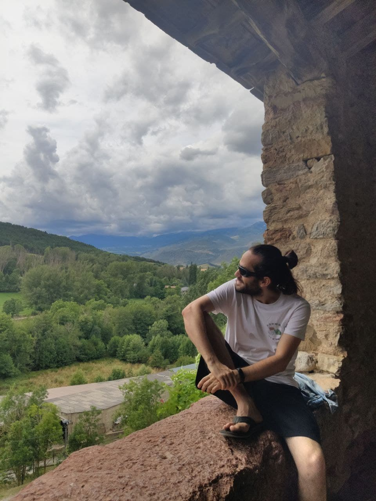

Xavier Rivas
Escuela Superior en Ingeniería y Tecnología, Universidad Internacional de La Rioja
- xavier.rivas(at)upc.edu
xavier.rivas(at)unir.net - web page
- web.mat.upc.edu/xavier.rivas
xavirivas.com - ORCID code
- Other links
- arxiv.org
ResearchGate
Google Scholar
ResearcherID
MathSciNet
Zotero
 0000-0002-4175-5157
0000-0002-4175-5157■ Research
I develop my research in differential geometry and its applications to mathematical physics, mechanics and field theory. I am part of the GEOMVAP group. We collaborate with other groups, in particular with those in the Geometry, Mechanics and Control Network.
My PhD advisors were Narciso Román-Roy and Xavier Gràcia Sabaté. You can find my thesis here.
List of publications:
- J. de Lucas and X. Rivas, "Contact Lie systems"
Preprint. arXiv:2207.04038 - X. Rivas and D. Torres, "Lagrangian–Hamiltonian formalism for time-dependent dissipative mechanical systems"
Preprint. arXiv:2205.14757 - M. de León, J. Gaset, X. Gràcia, M. C. Muñoz-Lecanda and X. Rivas, "Time-dependent contact mechanics"
Monatsh. Math.(to appear) arXiv:2205.09454 - J. de Lucas, X. Gràcia, X. Rivas, N. Román-Roy and S. Vilariño, "Reduction and reconstruction of multisymplectic Lie systems"
J. Phys. A: Math. Theor. 55(29):295204, 2022. arXiv:2202.13748 doi: 10.1088/1751-8121/ac78ab - X. Gràcia, X. Rivas and N. Román-Roy, "Skinner–Rusk formalism for k-contact systems"
J. Geom. Phys. 172:104429, 2022. arXiv:2109.07257 doi: 10.1016/j.geomphys.2021.104429 - M. de León, J. Gaset, M. Lainz-Valcázar, X. Rivas and N. Román-Roy, "Unified Lagrangian-Hamiltonian formalism for contact systems"
Fortschritte der Phys. 68 (8):2000045, 2020. arXiv:2003.13037 doi: 10.1002/prop.202000045 - J. Gaset, X. Gràcia, M. C. Muñoz-Lecanda, X. Rivas and N. Román-Roy, "A k-contact Lagrangian formalism for field theories with dissipation"
Rep. Math. Phys., 87 (3):347-368, 2021. arXiv:2002.10458 doi: 10.1016/S0034-4877(21)00041-0 - J. Gaset, X. Gràcia, M. C. Muñoz-Lecanda, X. Rivas and N. Román-Roy, "New contributions to the Hamiltonian and Lagrangian contact formalisms for dissipative mechanical systems and their symmetries"
Int. J. Geom. Methods Mod. Phys., 17 (6):2050090, 2020. arXiv:1907.02947, doi: 10.1142/S0219887820500905 - J. Gaset, X. Gràcia, M. C. Muñoz-Lecanda, X. Rivas and N. Román-Roy, "A contact geometry framework for field theories with dissipation"
Ann. Phys., 414:168090, 2020. arXiv:1905.07354, doi: 10.1016/j.aop.2020.168092 - X. Gràcia, X. Rivas and N. Román-Roy, "Constraint algorithm for singular field theories in the k-cosymplectic framework"
J. Geom. Mech., 12 (1):1-23, 2020. arXiv:1812.08487, doi: 10.3934/jgm.2020002
Collaborators:
Some of the colleagues I have collaborated with are:
- Manuel de León
- Javier de Lucas
- Jordi Gaset
- Xavier Gràcia
- Manuel Lainz
- Asier López-Gordón
- Miguel C. Muñoz-Lecanda
- Narciso Román-Roy
- Silvia Vilariño
■ Teaching
Geometría Diferencial Aplicada. Máster Universitario en Ingeniería Matemática y Computación:
Universidad Internacional de La Rioja. UNIR. Programación.
Old courses
- Cálculo en varias variables. Grado en Matemática Computacional. Escuela Superior en Ingeniería y Tecnología, UNIR.
- Varietats diferenciables. Grau en Matemàtiques. FME, UPC.
- Càlcul. Grau en Geoinformació i Geomàtica. EPSEB, UPC.
- Fonaments matemàtics. Grau en Arquitectura Tècnica i Edificació. EPSEB, UPC.
- Informàtica. Graus en Enginyeria, àmbits industrial i TIC. EPSEVG, UPC.
- Àlgebra i geometria. Grau en Enginyeria de Sistemes Aeroespacials. EETAC, UPC.
- Àlgebra lineal i aplicacions. Grau en Enginyeria de Sistemes de Telecomunicació. EETAC, UPC.
- Càlcul en una variable. Grau en Matemàtiques. FME, UPC.
- Càlcul. Graus en Enginyeria. EEBE, UPC.